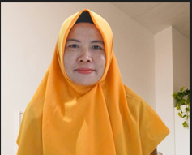

Guru Mata Pelajaran Informatika
IRMA RACHMAWATI, S.Kom.
Materi Informatika: Kelas 7, Kelas 8, Kelas 9, dan Pengunjung Umum
Pilih Peminatan Tingkat & Kurikulum Informatika
Assesmen Diagnosis Gaya Belajar
Pilih gaya belajar Anda agar materi dan evaluasi kuis disesuaikan secara otomatis:
Mode Adaptif AI Aktif: Informatika Multi-Gaya Belajar
Visual
Modul & Media Pembelajaran Adaptif
Kurikulum Merdeka InteraktifEvaluasi Adaptif Pembelajaran (Gaya Visual)
Skor Maksimal: 100
Evaluasi disesuaikan secara otomatis berdasarkan Bab Mata Pelajaran dan Gaya Belajar pilihan Anda.
Tugas Evaluasi Kreatif (Gaya Visual)
Selain soal pilihan ganda, kerjakan satu tugas unjuk kerja sesuai gaya belajar Anda. Pilih salah satu dari tiga bentuk tugas, sesuai bab yang sedang dibuka.
Tutor AI Informatika Interaktif
Tanyakan konsep Informatika yang ingin Anda pelajari atau perjelas. Tutor AI siap memberikan jawaban mendalam, rinci, panjang, dan akurat sesuai pertanyaan Anda.
Coba tanya per kelas: